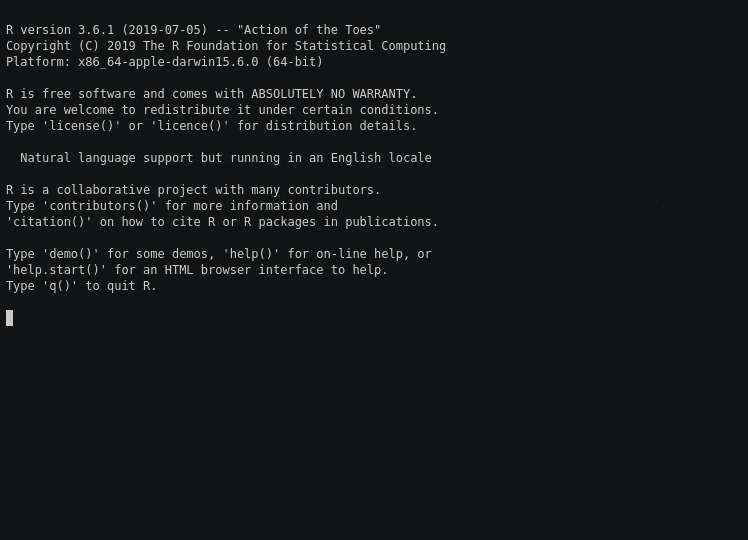

orderly is designed to support a number of flexible work patterns, depending on the size and structure of the group using it. This vignette describes several work patterns, in roughly increasing complexity.
The key issues to consider are
- how will report sources be shared?
- how do the inputs (e.g.,
orderlyresources) make it into the reports? - how will report outputs be shared?
- whose outputs are considered the “canonical” version?
Individual researcher
This is the simplest pattern, and the one that orderly has the fewest opinions about. We imagine a single researcher using orderly to keep track of a set of analyses. They would configure orderly with an empty orderly_config.yml, and would probably add archive to .gitignore (drafts should always be gitignored).
As the researcher develops reports, they create new directories in src/ using orderly::orderly_new(), run the reports on their own system using orderly::orderly_run() and commit them into their archive using orderly::orderly_commit().
The researcher needs to take care that the reports are run in a clean R session, as objects and packages in R’s global execution environment are available to their reports.
If the researcher wants to share a report with someone else, orderly has no opinion on this, and they are free to email a file, or share it in whatever manner they prefer. The researcher may still quote the report id (e.g., 20200315-100734-10e3de8a) as a way for them to easily be able to get back to the version of the report that they sent, along with all its source files and resources.
Backup is the responsibility of the researcher; if the computer is backed up, or if the archive lives on a service like Dropbox or OneDrive, this may be sufficient.
Why not commit the archive to git?
If your reports are very small, then this may work for you. However, git becomes slow to use when many large files have been added to it, and most hosting platforms, including GitHub will prevent addition of files over a certain size and may complain about overall repositories reaching a certain size. Cloning the source tree will become increasingly painful, and you may become wary of even running a report because of the impact it may have on the above problems. In our opinion, you should store your archive outside of git and use an alternative method to back it up and distribute it.
Small group, sharing via shared disk
As soon as more than one person is involved, things get more tricky. We need to ensure that everybody has a view of the same set of archive reports, and over the same source tree, yet can work on their own work somewhat independently.
The researchers use a common “source tree” which is under version control with git, and kept on GitHub. Nobody may commit to master and all changes to master are introduced via a “Pull Request” (other hosted source control platforms have equivalents, for example GitLab merge requests). Everybody has this cloned locally, and the git repository does not include archive or draft. With this setup it is easy to ensure that different members of the team are looking at the same source code, and orderly will track that as part of its metadata (git’s branch, sha and status).
However, we still must synchronise the reports that have been run. Of course everyone can run their own copy of a report and build off of that but this poses several potential problems:
- if the report is non-deterministic, the results will likely differ between runs
- if the report depends on an external data source (a SQL database, web resource, etc) the results may differ
- if underlying package versions have changed, the results may differ
- if the report is long-running, this is time-consuming
- everyone will end up with a different report id, so it is difficult to know that we’re looking at the same “effective” report when results are shared
What we want is that after a particular version of a report has been run, it is easy for other people to start depending on it. To achieve this we need a method for getting the archive from one person’s computer to another.
For this discussion we will assume two researchers “Alice” and “Bob” (rather than “Researcher A” and “Researcher B”).
Alice develops a report report-a on her computer by running orderly::orderly_new("report-a") and working with orderly::orderly_develop_start() and orderly::orderly_run() until she is happy with the results. She then creates a pull request, and Bob approves it (probably after checking that the report runs on his machine too) and merges it.
Now that this report has been merged into master we need to run a “canonical copy”. We do this on a third copy of the sources that are checked out somewhere accessible to both Alice and Bob; this might be using Dropbox or another file-sharing platform, or on a network drive visible to both users.
Either Alice or Bob may now pull the new changes onto this new source copy, and run orderly run report-a on the command line. Using the command-line version of orderly ensures that the report is run in a clean session, along with keeping a copy of the log alongside the outputs.
Now we have both Alice and Bob able to get the source of report-a and our shared archive having a copy of it; how do we get it to Alice and Bob? We need to edit the orderly_config.yml to tell it about this archive:
This tells orderly that we will use a file-based remote source (i.e., a shared copy of orderly) and that the path to this source is determined by the Environment variable ORDERLY_PATH_DEFAULT_REMOTE. Using an environment variable is necessary here as this path will certainly differ between Alice and Bob.
To fill in the environment variable we create a file orderly_envir.yml (which should be added to .gitignore) containing the path to the shared source. For Alice, this might look like
and for Bob it might look like
With this done, Bob can get a copy of report-a by running
orderly::orderly_pull_archive("report-a")which will copy the latest version of the report from the shared archive into their personal archive. A this point, Bob has exactly the copy of report-a that was run on the shared archive. In the same way that Alice and Bob can exchange git sha hashes to ensure that they are on the same version of the source tree, they can now exchange report ids and ensure that they are looking at the same output.
If you are working on a report that has a dependency (say report-b, which depends on report-a), you can automatically pull its dependencies by running
orderly::orderly_pull_dependencies("report-b")This is especially useful if report-b has many dependencies, or depends on particular versions of a report.
Some comments on collaboration
There are a number of features about the system here that might not be obvious at first, but that will aid collaboration.
- Because each report exists in its own directory within
src/we reduce the potential for conflicts. In a collaborative analysis where multiple files are shared across analyses, it is easy to have conflicts.orderlyforces analyses into separate directories, which means most of the time it is trivial to merge even long-lived branches. This is particularly important with relatively new users of git. - Because every report gets a unique identifier, it is straightforward to combine outputs that were run on different machines. In the example above this is a centralised system (one canonical source, several destinations) but in theory more complicated distributed patterns are possible.
- On the central server, the archive directory is an “append only” system; nothing is ever modified. This seems wasteful at first as there can be lots of copies of a report, but disk space is cheaper than researcher time (and you can remove redundancy with
orderly::orderly_deduplicate)
Group of researchers, sharing via server
This is the model that we use within the MRC Centre for Global Infectious Disease Analysis, and it does require considerably more setup, but also more reliability and flexibility.
As above, we use a single “source tree”, kept on GitHub or similar. However, someone in the group takes responsibility for setting up a copy of OrderlyWeb, our open source, self-hosted orderly server. The OrderlyWeb server software provides a number of things
- A persistent copy of R running
orderlythat can run reports as needed - A web server that exposes a user-friendly web portal showing versions of orderly reports and an HTTP API (this application is written in Kotlin)
- A reverse proxy used to secure the application with https
This diagram may help show how the pieces fit together.
{kind=link}
If OrderlyWeb has been deployed onto orderly.example.com, then we might declare it in orderly_config.yml
remote:
default:
driver: orderlyweb::orderlyweb_remote
args:
host: orderly.example.com
token: $GITHUB_TOKENOnce this is done, both Alice and Bob can run reports on that server, for example
orderly::orderly_run_remote("internal-2017-population-TUV-MHL", remote = "science")
this will print to screen the log, just as if it were running locally, though it is in fact running on a fresh R session remotely. After being run, this report is available to everyone and can be pulled as above
orderly::orderly_pull_archive("report-a", remote = "default")Using staging environments
This can be extended further with the use of “staging environments”. This extends the above (two) scenario so that we have multiple remote orderly archives. These might be shared file archives, using orderly::orderly_remote_path or server hosted archives using orderlyweb::orderlyweb_remote or even a combination.
We designate one of these remotes to be our production environment and the others to be staging. In our work we have used the name pairs production/science and real/testing; the names used do not matter.
The orderly_config.yml configuration might then look like:
remote:
staging:
driver: orderlyweb::orderlyweb_remote
args:
host: orderly.example.com
port: 11443
token: $GITHUB_TOKEN
production:
driver: orderlyweb::orderlyweb_remote
args:
host: orderly.example.com
token: $GITHUB_TOKENNow, as part of the pull request review procedure, the reviewer will run the report on the staging environment, which means that it should work without error on the production environment if they have been set up the same way.
orderly::orderly_run_remote("report-a", remote = "staging", ref = "origin/myfeature")where myfeature is the name of the branch. This report can now be inspected (a URL will be generated which may be emailed around), and after being merged, the report can be run on the production server with
orderly::orderly_run_remote("report-a", remote = "production")We would recommend that on the production server only master be used. This can be enforced by adding master_only: true to the configuration as:
remote:
production:
driver: orderlyweb::orderlyweb_remote
master_only: true
args:
...Dependency resolution
As soon as there are multiple archives, resolving dependencies becomes more challenging. If Alice has two reports that depend on each other, she might want to use the most recent versions on her machine, or the most recent versions as seen by one of her remotes as that is where the report will eventually be run.
To allow this, when running orderly::orderly_run, Alice can provide the argument remote, indicating which of her remotes she would like to use for dependency resolution.
Now, even if she has more recent copies of the dependencies locally, her report will use the same copies as would be used on the server she chooses. Any local copies of remote reports will be downloaded to her computer before the report is run.
Looking forward, a fully decentralised approach
With some additional development on orderly, further work patterns are possible, including a decentralised approach. We might like to have a set of known “good” archives, or partially overlapping source trees, or archives that depend on data sources that come from other orderly archives that are not even present in their source tree.
To support this, we can have a network of orderly servers which can exchange sub-trees amongst each other. In this fashion, we can imagine the following things being possible
- Have common data processing “reports” described in one orderly source tree, but used by reports in several other sources trees
- Have orderly “runners” available on HPC platforms, making it easy to reliably run demanding reports on larger infrastructure then incorporate them back into the “canonical” archive (see orderly bundles for one approach to this)
- Allow distributed teams of researchers with intermittent access to synchronise their own trees of outputs, eventually becoming consistent with each other
All the lower-level support for these patterns is available, and implementing them in orderly is not necessarily hard - we just have not found the need for this ourselves yet. If this is of interest please get in touch.